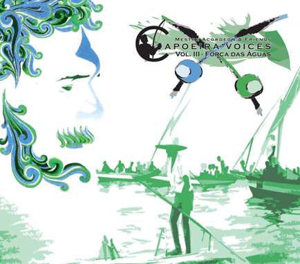

Новый альбом Mestre Acordeon — Força das Águas (2011)

Свежий альбом знаменитого музыканта и мастера капуэйры Mestre Acordeon — Força das Águas. Дата релиза: конец июня 2011 года. Качаем и плюсуем ;)
Музыку выкладываю только для ознакомительных целей участников сообщества Capoeira.in. Пожалуйста, купите альбом. Все поступления с продажи альбома пойдут на некоммерческий проект Kirimurê, в помощь детям из бедных семей.
Описание альбома:
Força das Águas has been in the oven for a few years. In addition to new capoeira songs, it has different textures and flavors. Featuring: Mestre Acordeon, Mestre Sorriso, Mestre Lobão, Contramestre Cravo, Professor Salê, and Professor Recruta.
Список песен:
1. Catarina — Mestre Acordeon
2. Ogum Ê — Mestre Sorriso e Contramestre Cravo
3. Eu vi Lá — Mestre Acordeon
4. Força das Águas — Mestre Acordeon
5. Vou Navegando — Mestre Acordeon
6. Pedra que Ronca — Mestre Acordeon
7. Paraná Funk — Mestre Lobão e Contramestre Cravo
8. Água pra Lavar — Mestre Lobão
9. Tráfico de Negro _ Professor Salê
10. Vim da África — Mestre Acordeon
11. Ê Baianinha — Professor Recruta
12. Portão de Ouro — Contramestre Cravo
13. Mestre Acordeon (live)
Скачать (формат .m4a, zip-архив, 60MB) | мои предыдущее посты